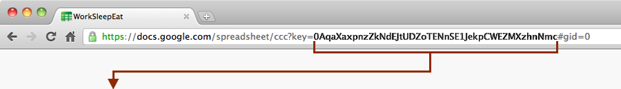

Get ready...
For the best results, clean and edit your spreadsheet before you use this tool. If you don’t know how to clean data, read our tutorial. Here are some things to keep in mind:
Requirements
- You must have at least one text column.
- You must have at least one numeric column.
- You must have a single row of column labels. Multiple label rows will break the tool.
- Format special characters such as thousand separators (,) and currency signs ($) in the Google Spreadsheet.
- The spreadsheet must have exactly one worksheet (the default).
Recommendations
- Optimize your data for the Web for better performance. Delete everything you don’t need from your Google spreadsheet, including columns you don’t plan to publish and blank rows.
- Arrange your columns in the order in which you would like them displayed.
- Use a finished spreadsheet. If you must edit the Google spreadsheet, changes in will update automatically in the published graph. But editing can introduce errors that can break your table.
- Do not use all caps text. It requires additional space and makes your chart harder to read.
Get set...
Next you need to make sure your spreadsheet is published and available on the web. There are two steps:
- Click the File menu and select Publish to the Web. Check Automatically republish changes and click Start publishing.
- Open your Google Spreadsheet and click the Share button in the top right. Make the document viewable to anyone on the Web.
If you are still a little confused, the video to the right demonstrates how to publish.
Enter your spreadsheet ID
With your spreadsheet open, look in the URL for the term “key=” This will be followed by a unique ID made of letters and numbers. Copy just the ID and paste in the field below.

Before continuing, please use the Test button to verify your spreadsheet. The test may take 30 seconds.
TIP: If you want to work with the campaign contributions example, select the key in this link (text in bold):
https://docs.google.com/spreadsheet/ccc?key=0AtP_YtDJ532RdDcxZUl6Zkl4YkxKcEYzbld4ZDA4SlE&hl=en_US#gid=0
Select your columns
You are working on spreadsheet: .
Please select the columns you want included in your table.
At least one column must contain numeric data.
Tip: Limit the number of columns to fit the width of the content area on your site. For example, if your story area is 600 pixels wide, limit the number of columns to five or so. Too many columns in a small space can be very hard to read and will make the page load more slowly. If you need to display more columns, consider publishing on a full-width page.
Please select the columns you want to display (five-column limit recommended).
Retrieving column data... 
Decide what the user will search
The table will start with a widget that allows readers to search the entire database. After the initial results are displayed, they'll be able to apply filters.
Describe the searche.g. "Search all contributions" Invite users to search the data. Include an example to get them started. e.g. "Enter the name of a contributor to find donations. For example, type in "Fred" or "Flintstone." |
Select a text columnUsers can only search within a text column.
|
Select a numeric columnYour table must have at least one column with numbers. They will be able to select "less than," "greater than," etc.
|
Set up the results page
FreeDive includes interactive filters on the results page. This allows your readers to refine their results. This is especially helpful with large databases. You must choose one column for each filter. To see the three types in use, check out this example.
Select a text column
Allows users to search within a text column. For example, they can search for part of a name or a ZIP Code. |
Select a category column
Allows users to select a category from a drop down menu. TIP: Every attribute will be added to the picker list so use columns with limited attributes. |
Select a numeric slider column
Creates a slider tool so that users can change which range of data is included in the results. |
Size
Setting the size of your chart is very important. It directly impacts how your reader interacts with your data. Make it too small and the the value of the data is diminished in their eyes. Make it too big and it will overwhelm and scare them away.
Width in pixels
pixelsTIP: We recommend that you make your chart the full width of your regular story or post content. This helps it integrate the table into your site. If you must display 7-10 columns, you may have to make the table the full width of your page.
pixels
TIP: If the chart will be above a story, consider setting the height to 300-400 pixels. For example, this wizard is 450 pixels high so that if we need to display text below you will still be able to see it. If your table will stand alone on a page, 800 pixels or more of depth will give the reader access to more data and may be better.
Congratulations! You’re done...
Embed code
Copy and paste this code into a or blog in HTML mode to display your table. The code is mainly javascript (which some platforms restrict) so you may have to ask someone with admin access to post it for you.
HTML page
You can choose to download your table as an html document. This table uses the FreeDive theme and looks a little better. It also makes it easier for you to customize the CSS to match your site.
Iframe instructions
- Rename the downloaded file to "yourname.html"
- Upload the renamed page to your web server. Note the URL (web address) of where it's located.
- Copy the code below and paste it into a web page.
- Replace the URL text in the code below with the URL of your uploaded html page.
<iframe src="URL" width="100%" height="300" frameborder="0">
<p>Your browser does not support iframes.</p>
</iframe>